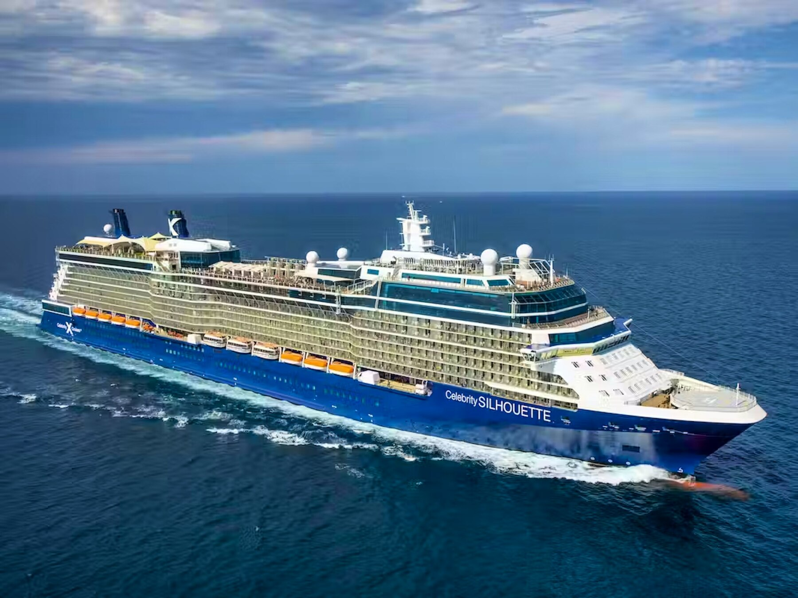
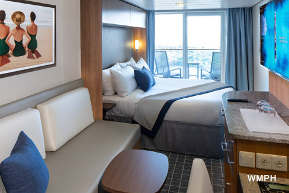

Set sail from Fort Lauderdale aboard Celebrity Silhouette for an eight-night getaway featuring two relaxing sea days, three colorful ABC-island ports, and two final days at sea before returning to Florida.
ShipCelebrity Silhouette
Travel DatesDec. 5–13, 2026
Travelers2 Adults
CabinVeranda #7216
Roundtrip PortFort Lauderdale

Celebrity Silhouette

Veranda Cabin
Important
Confirmation numbers are intentionally not shown on this public itinerary page. Keep the confirmation details sent separately by your travel advisor with your travel documents.
Saturday • December 5, 2026
Fort Lauderdale • Embarkation Day
Check-in window: 10:30 AM–2:30 PM
Welcome to Fort Lauderdale and the start of your Southern Caribbean cruise. Today is about getting to Port Everglades, checking in, boarding Celebrity Silhouette, and settling into your veranda cabin.
Port Everglades
Cruise Port: Port Everglades, Fort Lauderdale, Florida
Terminal: Verify the assigned terminal in the Celebrity app or your final cruise documents before departure. Terminal assignments can change.
If Terminal 25 is assigned: 2025 Eller Drive, Hollywood, FL 33316.
Parking & Drop-Off
Follow Port Everglades electronic signs to the ship and assigned terminal.
Rideshare and taxi drivers can drop passengers at the terminal entrance.
If parking, follow signs for the garage serving your assigned terminal and allow extra time for port security.
Before You Board
Complete Celebrity online check-in and keep the Celebrity app available.
Have required identification and cruise documents accessible.
Attach luggage tags before handing larger bags to porters.
Keep medications, valuables, travel documents, electronics, chargers, and anything needed during the first few hours in your carry-on.
Consider packing a swimsuit, sunscreen, and a change of clothes in your carry-on because checked luggage may arrive at the cabin later.
If You Have Extra Time in Fort Lauderdale
Stroll the Fort Lauderdale beachfront promenade.
Explore shops, galleries, and restaurants along Las Olas Boulevard.
Take a Water Taxi ride for views of the city’s canals and waterfront homes.
Walk part of the Riverwalk along the New River.
Keep sightseeing light on embarkation day unless you are already in Fort Lauderdale with plenty of time before your assigned arrival window.
Another unhurried sea day before reaching Aruba. This is a good day to enjoy anything you missed yesterday and make plans for the three port days ahead.
Ideas for Today
Enjoy a leisurely breakfast and some time on deck.
Explore onboard shops, lounges, entertainment, and enrichment activities.
Review tomorrow’s Aruba plans and your preferred transportation or sightseeing options.
Charge phones and cameras and prepare a small port-day bag.
Aruba offers a long port day with plenty of time for beaches, sightseeing, shopping, dining, and sunset views. The island is known for bright turquoise water, white-sand beaches, and a dry, breezy climate.
Sightseeing Ideas
Eagle Beach: wide white sand, clear water, and Aruba’s famous fofoti trees.
Oranjestad: colorful Dutch-Caribbean architecture, shops, restaurants, and an easy wander near the cruise port.
California Lighthouse: panoramic island views from Aruba’s northwest tip.
Arikok National Park: rugged desert scenery, caves, coastline, and a very different side of the island.
Curaçao blends beaches, history, and distinctive Dutch-Caribbean architecture. Willemstad is especially easy to enjoy on foot and makes a colorful centerpiece for the day.
Sightseeing Ideas
Willemstad: explore the colorful waterfront and historic districts.
Queen Emma Bridge: walk the floating pedestrian bridge linking Punda and Otrobanda.
Grote Knip Beach: enjoy one of Curaçao’s most scenic beaches, known for clear turquoise water and a beautiful sheltered bay.
Hato Caves: explore limestone caves filled with stalactites, stalagmites, and fascinating island history.
Bonaire is prized for clear water, reefs, wildlife, rugged scenery, and a relaxed island feel. It is especially well known for snorkeling and diving, but there is plenty to see from land too.
Sightseeing Ideas
Kralendijk: stroll the colorful waterfront and compact town center.
Klein Bonaire: take a water taxi for beach time and excellent snorkeling conditions.
Flamingos: look for Bonaire’s famous flamingos in the island’s protected natural areas.
Washington Slagbaai National Park: discover rugged scenery, turquoise water, cactus landscapes, and historic buildings.
Enjoy the final full day onboard before returning to Fort Lauderdale. Leave time to revisit favorite spaces, enjoy one last special meal, and get organized for disembarkation.
Ideas for Today
Enjoy your favorite onboard venues one more time.
Review your onboard account and address any questions before the final morning.
Check disembarkation instructions and luggage procedures in the app or delivered materials.
Pack most belongings tonight, keeping tomorrow morning’s essentials with you.
Celebrity Silhouette returns to Fort Lauderdale this morning. Actual time off the ship depends on clearance, luggage arrangements, and the disembarkation group assigned onboard.
Disembarkation Checklist
Follow the luggage and disembarkation instructions provided onboard.
Keep identification, travel documents, medications, valuables, and electronics with you.
Review the final onboard account before leaving the ship.
Double-check drawers, closets, the safe, bathroom, outlets, and balcony before leaving the cabin.
Allow plenty of time before any same-day flight or ground transportation connection.
If You Have Time in Fort Lauderdale
Enjoy breakfast or lunch along Las Olas Boulevard.
Take a Water Taxi ride or stroll along the Riverwalk.
Spend a few hours at Fort Lauderdale Beach if your onward travel schedule allows.
Expect warm tropical conditions in Aruba, Curaçao, and Bonaire, with daytime temperatures commonly in the 80s°F, strong Caribbean sun, breezes, and the possibility of brief showers. Fort Lauderdale is usually warm but can be cooler than the islands, especially mornings and evenings.
Before You Leave
Check the actual forecast for Fort Lauderdale and each island about a week before departure and adjust clothing or rain protection as needed.
Tailored for This Trip
Packing List
Caribbean Days
Lightweight, breathable clothing
Swimsuits and cover-ups
Reef-safe or destination-appropriate sunscreen
Hat and sunglasses
Comfortable walking shoes
Sandals or water shoes if desired
Small day bag or beach bag
Refillable water bottle
Onboard & Evenings
Smart Casual dinner outfits
One or two Evening Chic options if desired
Light sweater or wrap for cool indoor spaces
Workout clothes if using the fitness center
Phone/camera chargers
Portable battery pack
Carry-On Essentials
Required ID and travel documents
Prescription medications
Valuables and electronics
Swimsuit/change of clothes
Any essentials needed before checked bags arrive
Health & Comfort
Enough prescription medication for the full trip plus a small buffer
Basic over-the-counter medications you normally use
Motion-sickness remedy if needed
Insect repellent if desired for island outings
After-sun care or aloe
Good to Know
Travel Reminders
Celebrity App & Check-In
Complete online check-in when available, review the Celebrity app before departure, and keep it handy onboard for schedules, dining, activities, and trip information.
Dining Dress
Celebrity uses Smart Casual attire for main dining, specialty dining, and the theater, with one or two Evening Chic nights on many itineraries. Check the daily program for the evening’s suggested attire.
Money, Tipping & Payments
Most onboard spending is charged to the stateroom account. Carry a credit card and a modest amount of cash for small port purchases, transportation, or gratuities where appropriate. Let your card issuer know you will be traveling internationally if your bank recommends it.
Cell Phone, Roaming & Wi-Fi
Review your mobile carrier’s international roaming options before departure. At sea, avoid unintended cellular-at-sea charges by using airplane mode and connecting to ship Wi-Fi when desired. When in port, confirm your phone is using the plan or network you expect before turning cellular data back on.
Medications
Keep prescription medications in your carry-on, bring enough for the full trip, and keep any medication that must remain with you out of checked luggage.
Port-Day Timing
Ship time and local time may not always be the same. Always follow the ship’s stated all-aboard time and allow a comfortable buffer when exploring independently.
Sun & Hydration
The Caribbean sun can be strong even on breezy or partly cloudy days. Use sunscreen, reapply regularly, wear a hat or sunglasses, and drink water throughout the day.